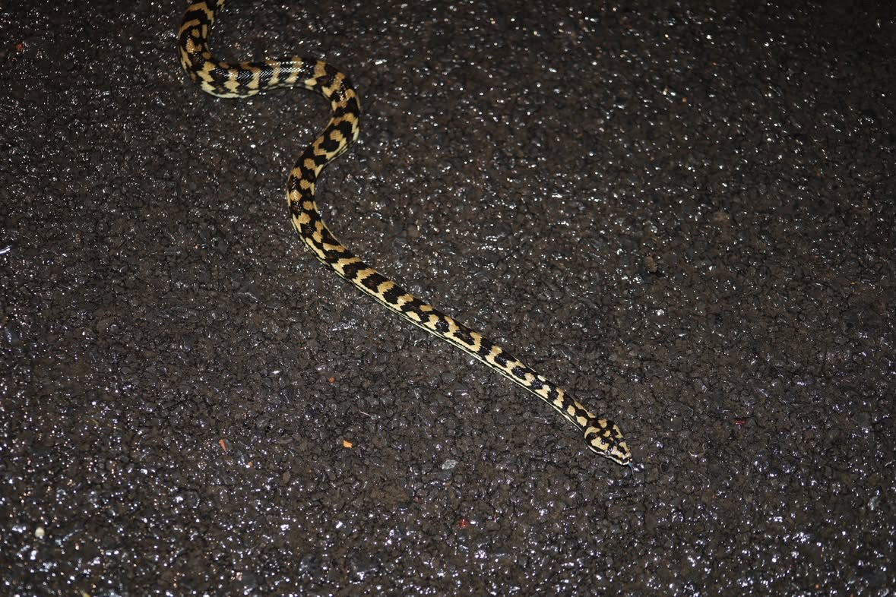

FIELD OBSERVATION
Jungle Carpet Python
Morelia spilota cheynei
Observed while road cruising along disturbed rainforest habitat. Raining lightly just on dusk. Spotted moving across the road, we stopped to take photos before continuing. Coming back the other way 20 minutes later to find this young python travelling back the way it came, with a large lump (assuming prey item) that it had eaten.